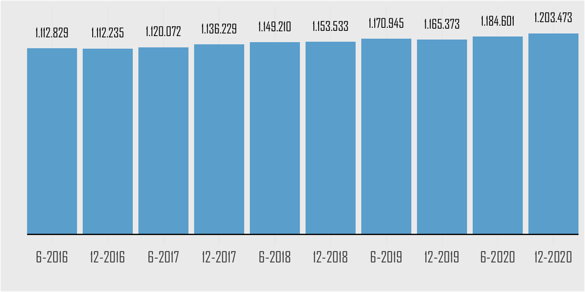
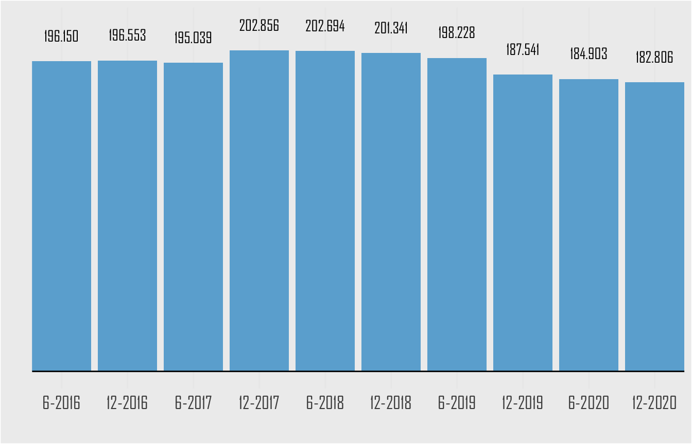
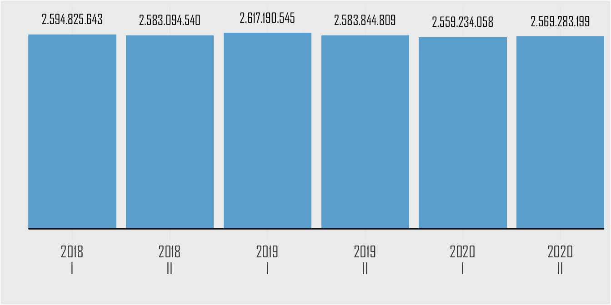
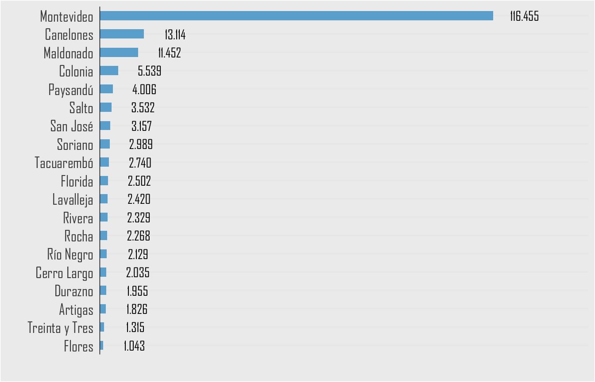
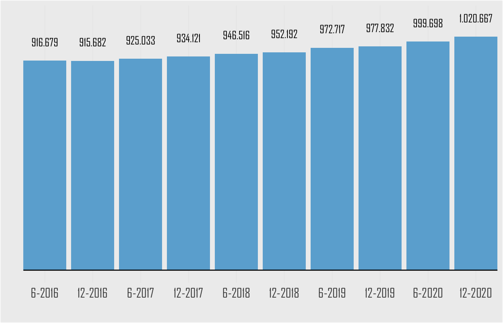

1 Telefonía Fija
1.1 Ingresos Telefonía Fija (Pesos)

1.2 Líneas de telefonía fija

1.2.0.0.1 Salto
1.3 Líneas de telefonía fija por departamento (Diciembre 2020)
1.4 Teléfonos Públicos

1.4.0.0.1 Salto
1.5 Teléfonos públicos por departamento (Diciembre 2020)
1.6 Líneas de telefonía fija por tipo de cliente (Diciembre 2020)

1.6.0.0.1 Salto
1.7 Líneas de telefonía fija comerciales

1.8 Líneas de telefonía fija Comerciales por departamento (Diciembre 2020)

1.8.0.0.1 Salto
1.9 Líneas de telefonía fija residenciales

1.10 Líneas de telefonía fija Residenciales por departamento (Diciembre 2020)

1.10.0.0.1 Salto
1.11 Kilómetros de fibra óptica instalada
1.12 Kilómetros de fibra óptica instalada por departamento (Diciembre 2020)

1.12.0.0.1 Salto
1.13 Cómputos de telefonía fija
1.14 Minutos de telefonía fija a teléfonos móviles

1.14.0.0.1 Salto
1.15 Minutos de tráfico de telefonía fija a teléfonos móviles por operador (año 2020)

1.16 Minutos de tráfico de telefonía fija a red móvil de ANTEL

1.16.0.0.1 Salto
1.17 Minutos de tráfico de telefonía fija a red móvil de Movistar
